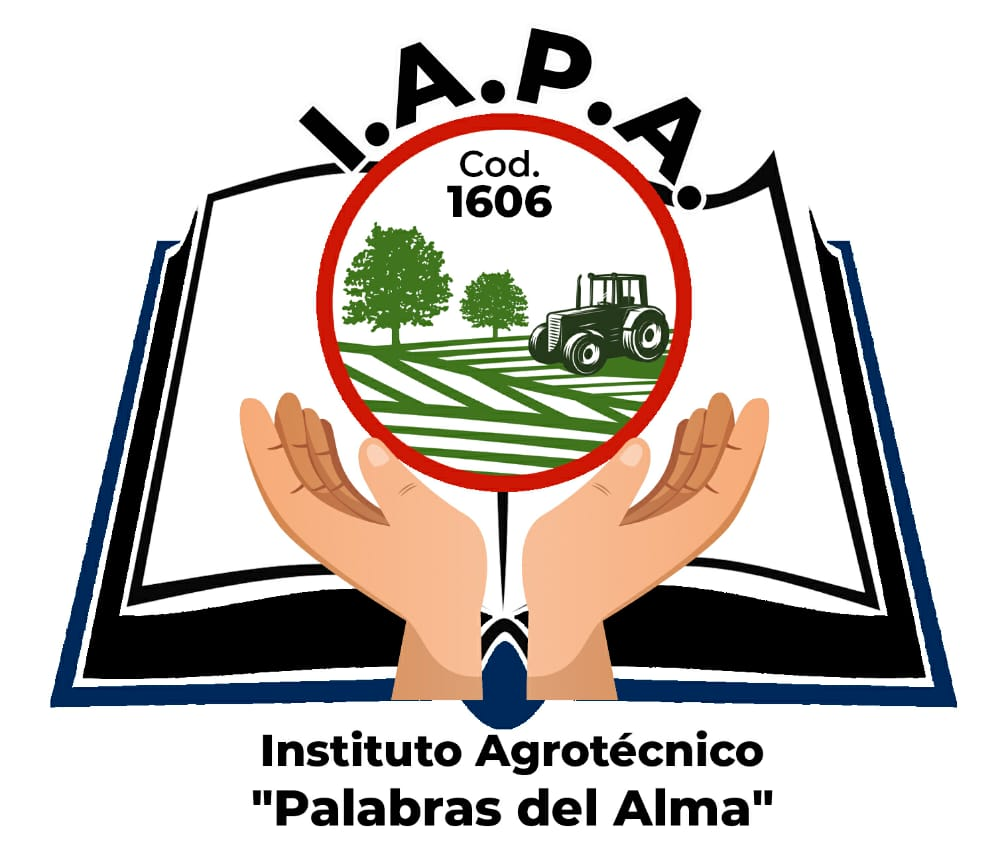

🌡️ Temperatura °C
Esperando suficientes mediciones.

Pozo Azul · Misiones · Instituto Agrotécnico “Palabras del Alma”
Un espacio de consulta de la Estación Meteorológica IAPA para la comunidad, productores, trabajadores y actividades al aire libre. Revisá siempre la hora de la última medición.
Gráficos basados únicamente en mediciones reales guardadas en la base de datos.
Esperando suficientes mediciones.
Esperando suficientes mediciones.
Esperando suficientes mediciones.
Esperando suficientes mediciones.
La probabilidad de lluvia es una estimación propia calculada a partir de los sensores; no equivale a un pronóstico oficial. La precipitación en milímetros requiere un pluviómetro.
Usá las mediciones como referencia orientativa y consultá también los pronósticos y alertas oficiales.
Última medición: Todavía no disponible
Orientaciones generales calculadas a partir de la última lectura disponible; no reemplazan alertas oficiales ni evaluación profesional.
Mapa centrado en las coordenadas que compartiste para el Instituto Agrotécnico “Palabras del Alma”: -26.4132602, -54.1622578.
La Estación Meteorológica IAPA integra sensores electrónicos, microcontroladores y herramientas digitales para observar condiciones ambientales en Pozo Azul, Misiones. El proyecto permite aprender sobre medición, electrónica, programación, análisis de datos y su aplicación en actividades agropecuarias.
Las lecturas son orientativas. La estimación de lluvia y la lectura del sensor de calidad del aire requieren validación y no reemplazan equipos certificados ni pronósticos oficiales.
Para consultas sobre el proyecto educativo, comunicarse con el Instituto Agrotécnico “Palabras del Alma”.